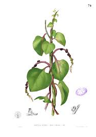

Basellaceae
Madeira-vine Family / Malabar Spinach Family
Basellaceae is a relatively small family, comprising about 4 genera and 15-20 species, most of which are perennial herbaceous vines with fleshy or succulent leaves and stems. Primarily native to the Neotropics, the family includes important edible species like Malabar spinach (Basella alba) and Ulluco (Ullucus tuberosus), as well as the invasive Madeira vine (Anredera cordifolia). Basellaceae belongs to the order Caryophyllales.
Overview
Basellaceae consists predominantly of herbaceous twining vines, often characterized by their succulent leaves and stems, and frequently growing from underground fleshy rhizomes or tubers. While the family's origins lie mainly in tropical and subtropical America, species like Basella alba (Malabar Spinach) are also found in the Old World tropics and widely cultivated, and Anredera cordifolia (Madeira Vine) has become a problematic invasive species in many warm regions.
The family includes plants of economic importance: Basella alba and Basella rubra are cultivated as leafy vegetables, particularly in Asia and Africa, known for their slightly mucilaginous texture. Ullucus tuberosus is a traditional Andean root crop, cultivated for its edible tubers and leaves. Belonging to the Caryophyllales, Basellaceae shares characteristics with related families like cacti and purslanes, including the presence of betalain pigments (giving red/yellow colors) instead of anthocyanins and having a single basal ovule in the ovary.
Quick Facts
- Scientific Name: Basellaceae
- Common Name: Madeira-vine Family, Malabar Spinach Family
- Number of Genera: 4 (Anredera, Basella, Tournonia, Ullucus)
- Number of Species: Approximately 15-20
- Distribution: Primarily Neotropical; Basella also Old World tropics. Some species widely cultivated or naturalized globally in warm regions.
- Evolutionary Group: Eudicots - Caryophyllales
Key Characteristics
Growth Form and Habit
Most species are perennial herbaceous twining vines, often arising from fleshy rhizomes or tubers which serve as storage organs. Stems and leaves are typically fleshy or succulent. Ullucus tuberosus is an exception, being a more compact, erect or sprawling herb cultivated for its prominent tubers.
Leaves
Leaves are simple, usually arranged alternately (though sometimes opposite near the base or in Tournonia), and typically have entire (smooth) margins. They are often somewhat fleshy or succulent, and frequently heart-shaped (cordate) or ovate. Stipules are absent.
Flowers
Flowers are generally small, radially symmetrical (actinomorphic), and usually bisexual (though sometimes functionally unisexual). They are arranged in spikes, racemes, or panicles.
- Bracteoles: Each flower is typically subtended by 2 bracteoles. These are often persistent and may become fleshy or wing-like, enclosing the fruit.
- Perianth: Consists of 5 petal-like tepals (undifferentiated sepals and petals), which can be white, pink, red, or greenish. The tepals are often fused at the base and are persistent, frequently becoming fleshy and surrounding the mature fruit.
- Stamens: 5 stamens are present, positioned directly opposite the tepals (antetepalous arrangement). The filaments are often attached to the base of the perianth.
- Ovary: Superior, composed of 3 fused carpels that form a single chamber (1 locule). Contains a single ovule attached at the base (basal placentation). There may be a single style with a 3-lobed stigma, or 3 separate styles/style branches.
Fruits and Seeds
The fruit is technically a utricle – a small, dry, indehiscent, single-seeded fruit. However, it is almost always completely enclosed by the persistent, often fleshy perianth (tepals) and sometimes the bracteoles as well. This combined structure often gives the appearance of a small berry or drupe (e.g., the dark purple "berries" of Basella alba).
Chemical Characteristics
A key feature shared with many core Caryophyllales families is the production of betalain pigments for red and yellow coloration (e.g., the red stems and leaf veins of Basella rubra or the purple "fruits"), rather than anthocyanins. Many species contain significant amounts of mucilage, contributing to their succulence and giving Basella leaves a slightly slimy texture when cooked. The tubers of Ullucus are rich in starch.
Field Identification
Identifying Basellaceae usually involves recognizing the combination of their vining habit, succulent tissues, and characteristic flower/fruit structure:
Primary Identification Features
- Habit: Mostly herbaceous twining vines (except Ullucus).
- Texture: Stems and leaves are noticeably fleshy or succulent.
- Flowers: Small, radially symmetric, typically in spikes or racemes. Look for 5 tepals subtended by 2 bracteoles.
- Fruit: A small, single-seeded utricle tightly enclosed by the persistent and often fleshy perianth and/or bracteoles, frequently resembling a small berry.
Secondary Identification Features
- Leaves: Usually alternate, simple, entire, often heart-shaped.
- Stamens: 5 stamens positioned opposite the tepals.
- Ovary: Superior, with a single basal ovule.
- Pigments: Reddish or purplish coloration (if present) is due to betalains (common in Caryophyllales).
- Tubers/Rhizomes: Often present underground. Ullucus has distinct, often brightly colored edible tubers.
Seasonal Identification Tips
- Growing Season: The succulent vines are most prominent during warm, moist growing periods.
- Flowering/Fruiting: Flowers and the characteristic fleshy "fruits" appear seasonally, aiding identification.
- Dormancy: Many species can persist through unfavorable conditions via underground rhizomes or tubers.
Common Confusion Points
- Other Vines: Many plant families include vines. Basellaceae differs from Dioscoreaceae (yams) by having simple leaves (vs. often complex venation) and different flower structure (5 tepals vs. 6). Differs from Convolvulaceae (morning glories) which have funnel-shaped flowers with fused petals. Differs from Vitaceae (grapes) which are woody vines with tendrils and different flowers/fruits.
- Succulence: While other families have succulent members (e.g., Portulacaceae, Crassulaceae), Basellaceae combines succulence with a predominantly vining habit and the specific floral formula (5 tepals, 2 bracteoles, 5 stamens opposite tepals, 1 basal ovule) and fruit structure.
Field Guide Quick Reference
Look For:
- Herbaceous twining vine (mostly)
- Fleshy/succulent stems and leaves
- Alternate, simple, entire leaves
- Flowers small, in spikes/racemes
- 5 tepals + 2 bracteoles per flower
- Fruit enclosed by persistent, often fleshy perianth/bracteoles (berry-like)
Key Variations:
- Flower color (white, pink, red)
- Leaf shape (ovate, cordate)
- Presence of large tubers (Ullucus)
- Vine vs. compact herb (Ullucus)
- Color of fleshy perianth in fruit (white, red, purple-black)
Notable Examples
Several species in Basellaceae are well-known, either as food crops, ornamentals, or invasive weeds.

Basella alba
Malabar Spinach, Vine Spinach, Ceylon Spinach
A fast-growing perennial vine, widely cultivated in tropical regions for its edible leaves and shoots. Leaves are succulent and slightly mucilaginous. Flowers are whitish or pinkish, followed by fleshy, dark purple to black "fruits" (utricle enclosed in fleshy perianth). Basella rubra is similar but with red stems and veins.

Anredera cordifolia
Madeira Vine, Mignonette Vine
Native to South America, this vigorous vine has become a serious invasive weed in many warm parts of the world (Australia, New Zealand, South Africa, California, Hawaii). It has fleshy heart-shaped leaves, produces masses of small, fragrant white flowers in drooping racemes, and reproduces aggressively via numerous aerial tubers produced on the stems.

Ullucus tuberosus
Ulluco
An important traditional root crop native to the Andes region of South America. Unlike other members, it's a more compact herbaceous plant grown for its brightly colored (yellow, pink, purple), waxy-skinned tubers, which are used like potatoes. The leaves are also edible. It rarely sets viable seed and is propagated vegetatively via tubers.
Phylogeny and Classification
Basellaceae is firmly nested within the order Caryophyllales, specifically within the "core Caryophyllales" clade. Molecular studies indicate close relationships with other families characterized by succulence and betalain pigments, such as Didiereaceae (endemic to Madagascar), Cactaceae (cacti), Portulacaceae (purslanes), and Montiaceae (miner's lettuce family). The exact sister group relationship can vary slightly between studies but consistently places Basellaceae within this succulent alliance.
The presence of betalain pigments (instead of anthocyanins) is a key biochemical synapomorphy linking Basellaceae to most other core Caryophyllales families (exceptions being Caryophyllaceae sensu stricto and Molluginaceae). Other shared traits include the single basal ovule and often persistent perianth parts surrounding the fruit.
Position in Plant Phylogeny
- Kingdom: Plantae
- Clade: Angiosperms (Flowering plants)
- Clade: Eudicots
- Clade: Core Eudicots
- Order: Caryophyllales
- Family: Basellaceae
Evolutionary Significance
Basellaceae showcases several interesting evolutionary aspects:
- Habit Diversification: Represents a predominantly vining lineage within the succulent clade of Caryophyllales, contrasting with the stem succulence of cacti or leaf succulence of Aizoaceae.
- Convergent Evolution: The fleshy structure surrounding the fruit (formed by perianth/bracteoles) mimics a berry or drupe, facilitating animal dispersal convergently with true berries in other plant groups.
- Domestication: Includes two independently domesticated food crops (Basella as a leaf vegetable, Ullucus as a tuber crop), highlighting human selection within the family.
- Betalain Pigmentation: Serves as a model group for studying the evolution and function of betalain pigments, characteristic of this part of the plant tree of life.
- Invasiveness: The case of Anredera cordifolia demonstrates how traits like vegetative reproduction (via tubers) can contribute to invasiveness when introduced to new environments.